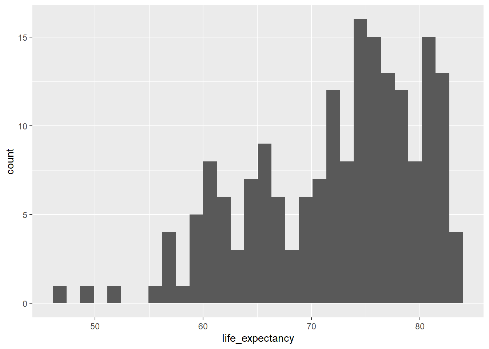
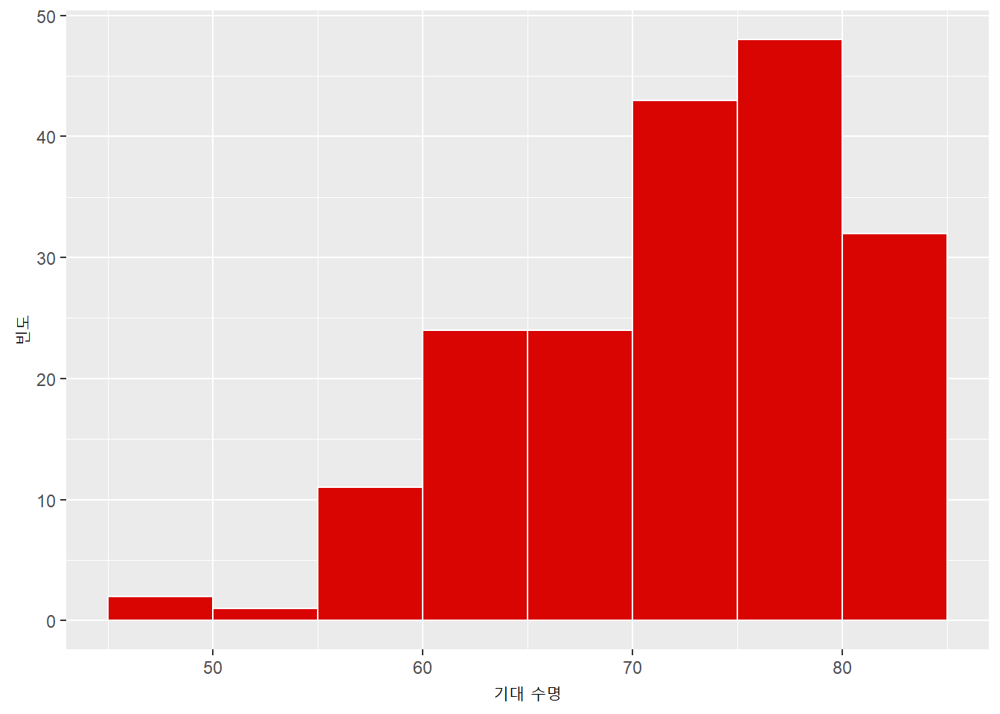
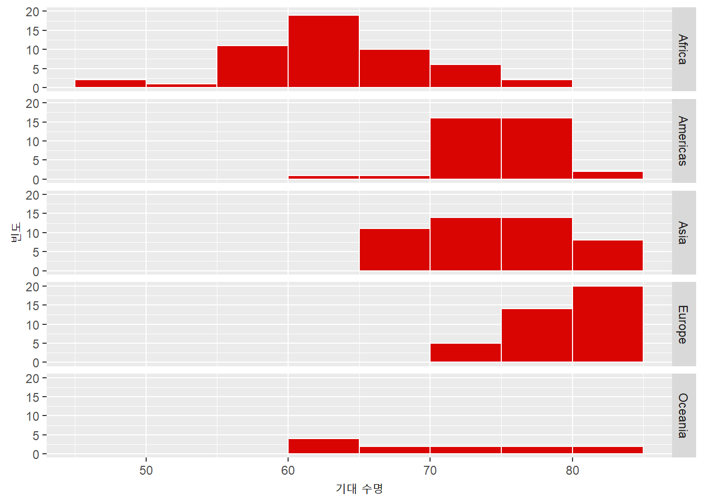
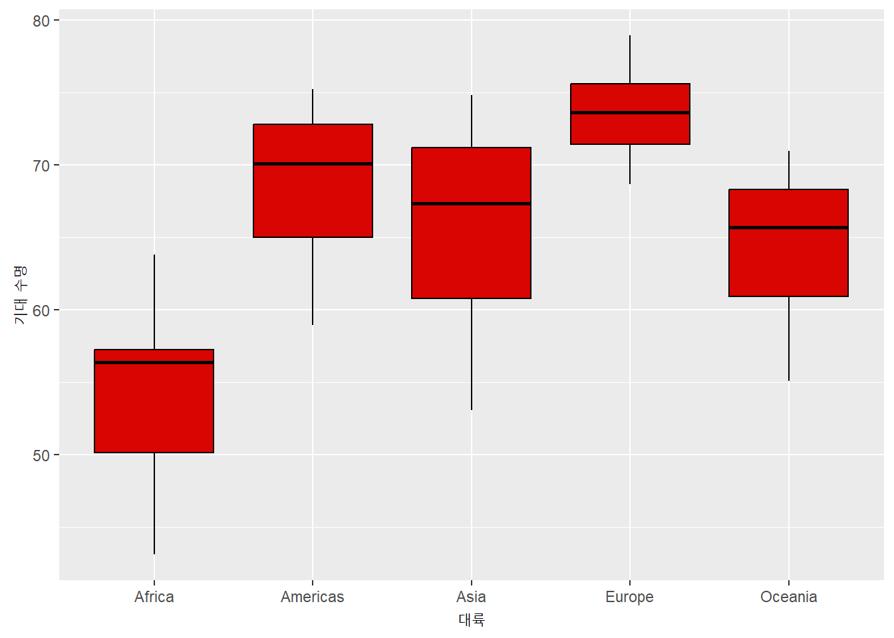
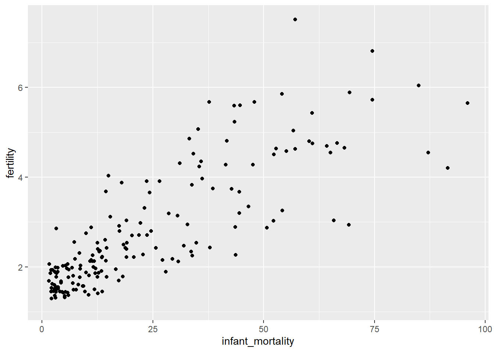
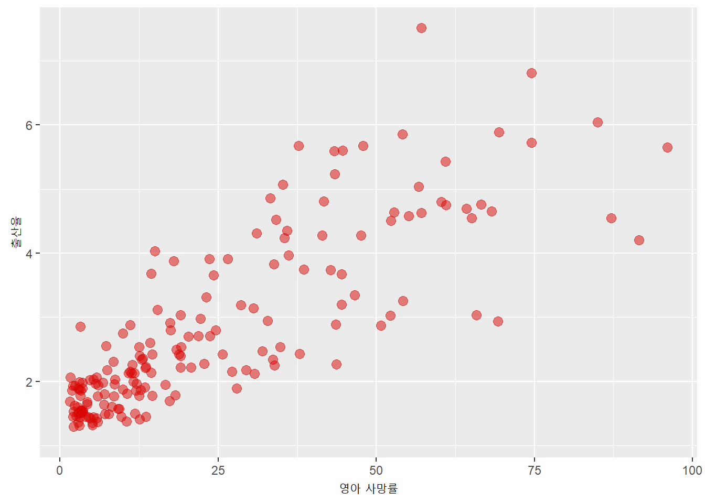
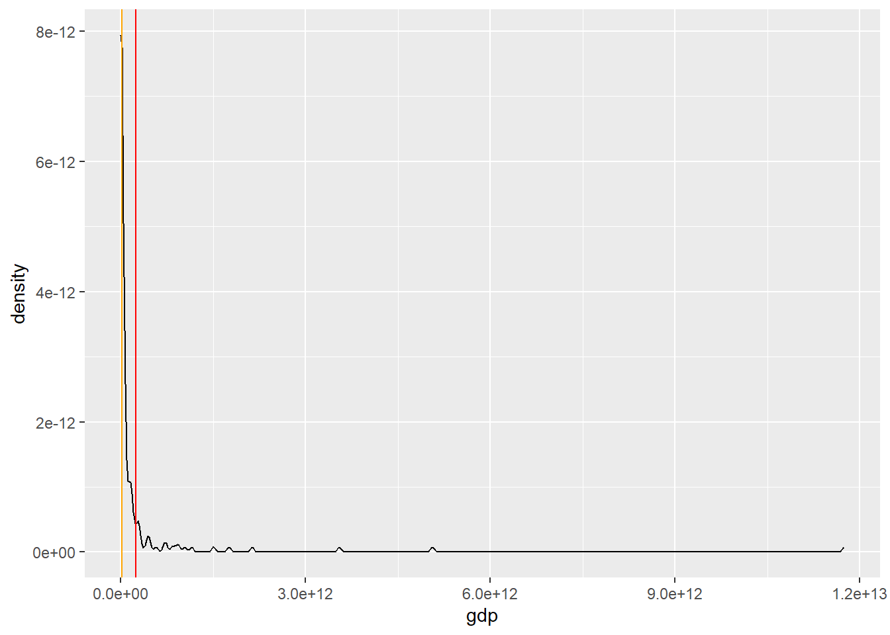
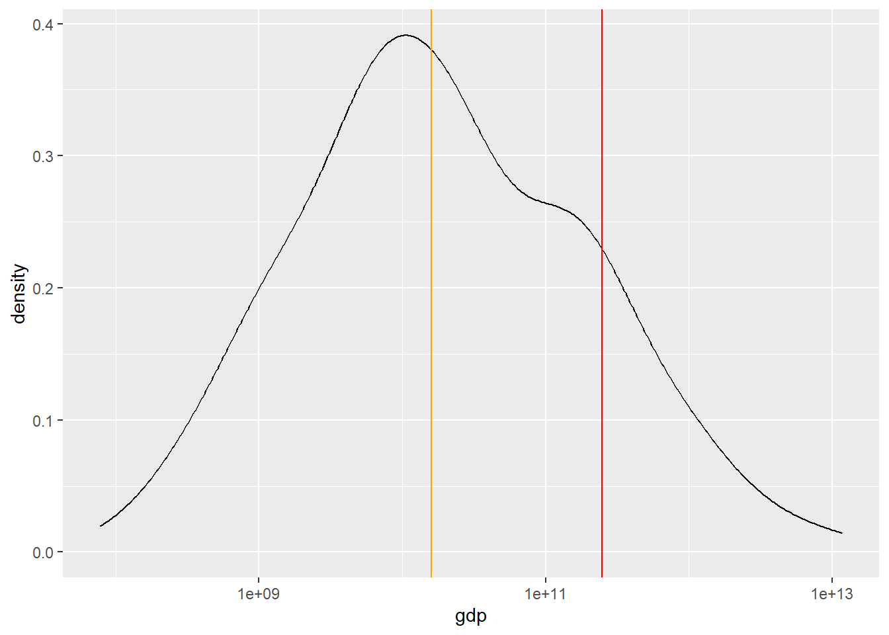

knitr::opts_chunk$set(
echo = TRUE,
message = FALSE,
warning = FALSE)Tidying, Visualising and Summarising Data - Tasks
Task 1
다음 코드를 실행하여 데이터를 로드합니다.
library(dslabs)
data(polls_us_election_2016)
library(tidyverse)- grade 값이 결측치(NA)인 여론조사는?
문서가 너무 길어지는 것을 방지하기 위해 head를 사용하여 처음 6개 행만 표시합니다.
polls_us_election_2016 %>%
filter(is.na(grade)) %>%
head state startdate enddate pollster grade samplesize
1 New Mexico 2016-11-06 2016-11-06 Zia Poll <NA> 8439
2 U.S. 2016-11-05 2016-11-07 The Times-Picayune/Lucid <NA> 2521
3 U.S. 2016-11-01 2016-11-07 USC Dornsife/LA Times <NA> 2972
4 Virginia 2016-11-01 2016-11-02 Remington <NA> 3076
5 Wisconsin 2016-11-01 2016-11-02 Remington <NA> 2720
6 Pennsylvania 2016-11-01 2016-11-02 Remington <NA> 2683
population rawpoll_clinton rawpoll_trump rawpoll_johnson rawpoll_mcmullin
1 lv 46.00 44.00 6 NA
2 lv 45.00 40.00 5 NA
3 lv 43.61 46.84 NA NA
4 lv 46.00 44.00 NA NA
5 lv 49.00 41.00 NA NA
6 lv 46.00 45.00 NA NA
adjpoll_clinton adjpoll_trump adjpoll_johnson adjpoll_mcmullin
1 44.82594 41.59978 7.870127 NA
2 45.13966 42.26495 3.679914 NA
3 45.32156 43.38579 NA NA
4 45.27399 41.91459 NA NA
5 48.22713 38.86464 NA NA
6 45.30896 42.94988 NA NA- 다음 조건을 모두 만족하는 여론조사는? (i) American Strategies, GfK Group, Merrill Poll에서 조사한 경우, (ii) 표본 크기가 1,000명 이상인 경우, (iii) 2016년 10월 20일에 시작된 경우. 힌트: (i) 조건에서는 %in% 연산자가 유용, 벡터는
c()함수로 만들 수 있음. (iii)에서는 날짜 변수의 형식을 확인
polls_us_election_2016 %>%
filter(pollster %in% c("American Strategies","GfK Group","Merrill Poll") &
samplesize > 1000 &
startdate == "2016-10-20") state startdate enddate pollster grade samplesize population
1 U.S. 2016-10-20 2016-10-24 GfK Group B+ 1212 lv
rawpoll_clinton rawpoll_trump rawpoll_johnson rawpoll_mcmullin
1 51 37 6 NA
adjpoll_clinton adjpoll_trump adjpoll_johnson adjpoll_mcmullin
1 50.28058 39.98632 4.733277 NA- 다음 조건을 모두 만족하는 여론조사는? (i) Johnson 후보의 여론조사 데이터가 누락되지 않은 경우, (ii) 트럼프와 클린턴의 원본 여론조사 지지율 합이 95%를 초과하는 경우, (iii) 오하이오(OH) 주에서 실시된 경우 힌트: 트럼프와 클린턴의 지지율 합계를 계산하는 새로운 변수를 생성한 후
filter()를 적용
polls_us_election_2016 %>%
mutate(rawpoll_clintontrump = rawpoll_clinton + rawpoll_trump) %>%
filter(!is.na(rawpoll_johnson) & rawpoll_clintontrump > 95 & state == "Ohio") [1] state startdate enddate
[4] pollster grade samplesize
[7] population rawpoll_clinton rawpoll_trump
[10] rawpoll_johnson rawpoll_mcmullin adjpoll_clinton
[13] adjpoll_trump adjpoll_johnson adjpoll_mcmullin
[16] rawpoll_clintontrump
<0 rows> (or 0-length row.names)- 표본 크기가 2,000명 이상인 여론조사에서 트럼프의 평균 지지율이 가장 높은 주는? 힌트:
filter(), group_by(), summarise(), arrange()사용. 내림차순 정렬하려면arrange()함수 사용.
polls_us_election_2016 %>%
filter(samplesize >= 2000) %>%
group_by(state) %>%
summarise(mean_trump = mean(rawpoll_trump)) %>%
arrange(desc(mean_trump))# A tibble: 26 × 2
state mean_trump
<fct> <dbl>
1 Alabama 62.5
2 Missouri 48.5
3 Indiana 47
4 Texas 46.0
5 South Carolina 45.5
6 Georgia 45.3
7 Kansas 44
8 New Mexico 44
9 Florida 44.0
10 Ohio 43.9
# ℹ 16 more rowsTask 2
다음 코드를 실행하여 데이터를 로드합니다.
library(dslabs)
data(gapminder, package = "dslabs")- 대륙/연도별 평균 인구(변수명: mean_pop)를 계산하고, 결과를 새로운 객체 gapminder_mean에 저장하시오. 힌트: 각 연도별 대륙당 하나의 관측치(행)만 있어야 함.
group_by및summarise사용
gapminder_mean <- gapminder %>%
group_by(continent, year) %>%
summarise(mean_pop = mean(population)) %>%
ungroup()- 만약
ungroup()을 하지 않으면 이후에 수행하는 mutate(), summarise(), filter() 등의 연산이 여전히 그룹 단위로 적용됩니다. 예를 들면 아래와 같습니다.ungroup()대신summarise함수에서.groups="drop"옵션을 써도 됩니다.
df <- tibble(group = c("A", "A", "B", "B"), value = c(1, 2, 3, 4))
# 그룹별 평균 계산
df_summary <- df %>%
group_by(group) %>%
summarise(mean_value = mean(value))
# mutate를 추가하지만 ungroup 안 함
df_summary %>%
mutate(overall_mean = mean(mean_value))# A tibble: 2 × 3
group mean_value overall_mean
<chr> <dbl> <dbl>
1 A 1.5 2.5
2 B 3.5 2.5Task 3
gapminder 데이터를 사용하여 다음의 그래프를 ggplot2로 생성하시오
- 2015년 기대수명(Life Expectancy)의 히스토그램을 작성하시오. 힌트: 히스토그램을 만들 때 aes()에 y 값을 지정해야 할까?
geom_*내에서 다음 옵션을 설정하시오:binwidth= 5,boundary= 45,colour= “white”,fill= “#d90502”. 이러한 옵션이 무엇을 의미하는지 설명하시오.
기본 히스토그램:
gapminder %>%
filter(year == 2015) %>%
ggplot() +
aes(x = life_expectancy) +
geom_histogram()
수정된 히스토그램(축 레이블 포함):
life_exp_hist <- gapminder %>%
filter(year == 2015) %>%
ggplot() +
aes(x = life_expectancy) +
geom_histogram(binwidth = 5,
boundary = 45,
colour = "white",
fill = "#d90502") +
labs(x = "기대 수명",
y = "빈도")
life_exp_hist
facet된 히스토그램:
life_exp_hist +
facet_grid(rows = vars(continent))
- 연도/대륙별 평균 기대수명을 구하고 대륙별로 평균 기대수명에 대한 Boxplot 으로 그리시오.
geom_*옵션:colour= “black”,fill= “#d90502”.
힌트: continent 및 year 두 개의 변수로 그룹화해야함.
gapminder %>%
group_by(continent, year) %>%
summarise(mean_life_exp = mean(life_expectancy)) %>%
ggplot() +
aes(x = continent, y = mean_life_exp) +
geom_boxplot(colour = "black",
fill = "#d90502") +
labs(x = "대륙",
y = "기대 수명")
3. 2015년의 영아 사망률(x축)에 대한 출산율(y축)의 산점도. 산점도를 만든 후 해당 geom_* 내에서 size를 3으로, alpha를 0.5로, colour를 “#d90502”로 설정합니다.
기본 산점도:
gapminder %>%
filter(year == 2015) %>%
ggplot() +
aes(x = infant_mortality, y = fertility) +
geom_point()
축 레이블이 있는 산점도:
gapminder %>%
filter(year == 2015) %>%
ggplot() +
aes(x = infant_mortality, y = fertility) +
geom_point(size = 3,
alpha = 0.5,
colour = "#d90502") +
labs(x = "영아 사망률", y = "출산율")
Task 4
- 2011년 GDP의 평균을 계산하고 mean이라는 객체에 할당하시오. 결측값은 제외. 힌트:
mean함수의 도움말을 읽고NA를 제거하는 방법을 확인
mean_GDP <- gapminder %>%
filter(year == 2011) %>%
summarise(mean(gdp, na.rm = T))
mean_GDP mean(gdp, na.rm = T)
1 246954895975- 2011년 GDP의 중앙값을 계산하고 median이라는 객체에 할당하시오. 마찬가지로 결측값을 제외. 중앙값이 평균보다 큰가, 작은가?
median_GDP <- gapminder %>%
filter(year == 2011) %>%
summarise(median(gdp, na.rm = T))
median_GDP median(gdp, na.rm = T)
1 16031265699중앙값은 평균보다 훨씬 작습니다.
geom_density를 사용하여 2011년 GDP의 밀도 그래프(density plot)를 생성하시오. 밀도 그래프는 숫자형 변수의 분포를 나타내는 방법임. 또한 다음 코드를 추가하여 평균과 중앙값을 수직선으로 표시하시오.geom_vline(xintercept = as.numeric(mean), colour = "red") + geom_vline(xintercept = as.numeric(median), colour = "orange")
gdp_density <- gapminder %>%
filter(year == 2011) %>%
ggplot() +
aes(x = gdp) +
geom_density() +
geom_vline(xintercept = as.numeric(mean_GDP), colour = "red") +
geom_vline(xintercept = as.numeric(median_GDP), colour = "orange")
gdp_density
GDP 분포는 매우 왜곡(Skewed)되어 있습니다. GDP가 적은 국가가 많고 GDP가 매우 큰 국가(미국, 일본, 중국)는 적습니다. 이러한 경우 평균은 중앙값보다 (상당히) 클 것입니다. 이것을 더 명확하게 보기 위해 각 눈금이 이전 눈금보다 10배 더 크게 x축을 변환한 그래프가 아래입니다(따라서 척도는 선형이 아닙니다. 즉, 첫 번째 눈금은 100,000, 두 번째는 100만, 세 번째는 1천만 등입니다.).
gdp_density +
scale_x_log10()
- 2015년 출산율(fertility)과 유아 사망률(infant mortality)의 상관관계를 계산하시오. NA 값을 제외하려면
cor()함수의use인수를 “pairwise.complete.obs”로 설정. 이 상관관계 값이 Task 3에서 생성한 그래프와 일치하는가?
gapminder %>%
filter(year == 2015) %>%
summarise(cor(fertility, infant_mortality, use = "pairwise.complete.obs")) cor(fertility, infant_mortality, use = "pairwise.complete.obs")
1 0.8286402이 상관 관계는 양수이고 강합니다(1에 비교적 가깝습니다). 이는 Task 3에서 생성된 그래프와 일치합니다. 실제로 해당 그래프는 이러한 두 변수 간의 양의 관계를 보여 주었고 점이 그렇게 분산되지 않았습니다.